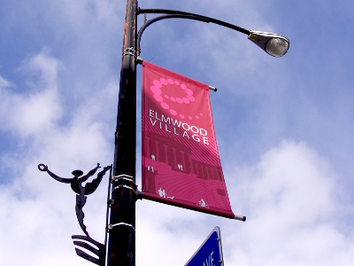

The Lexington and Ashland Apartments are located in the heart of Elmwood Village. In 2007, the American Planning Association selected Elmwood Village as one of 10 Great Neighborhoods in America, sharing the designation with Park Slope of Brooklyn and Pike Place Market of Seatle. The Elmwood Village neighborhood is a model of urban redevelopement and has a uniquely community atmosphere.
Our apartments are walking distance to hundreds of local restaurants, cafes, bars, stores, salons, galleries, museums. Through out the year, there are festivals, outdoor concerts, cultural events, and farmers market. This is the one of the most vibrant neighorhood in Western New York. Elmwood village is also a stone throw away from both downtown Buffalo and the northern suburbs.